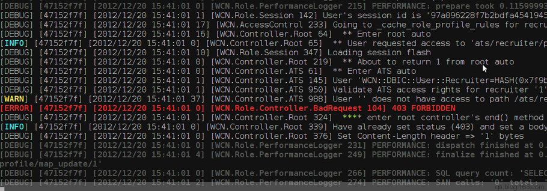
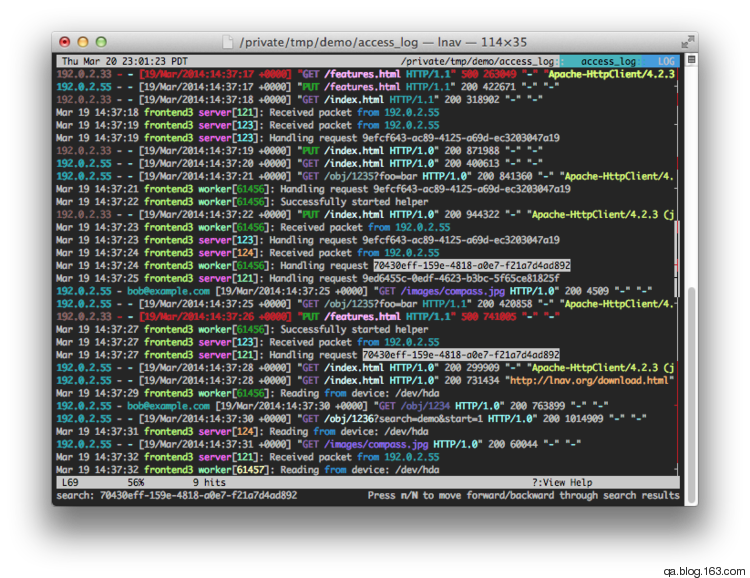
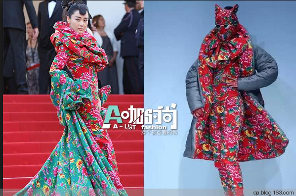
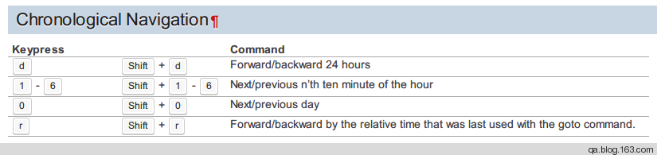

看日志技巧一则
Contents
昨天看到教练在终端里面看日志。在xshell里面字体竟然只设置成9号。真是要瞎了我的钛合金狗眼了。
其实字体设置的小，不见得信息量更多。
那么技巧1就是把字体调大。调成14或者16。
另外看日志的时候其实更关注的是模式，也就是pattern。这是个什么意思呢，我们有个服务，每次升级完之后就看是关注日志，看有木有大量异常抛出来，要有就有问题了，所以其实不是具体关注到行，而是看这个模式有没有变化。
另外日志其实一直用tailf盯着也看不出啥花来。可不可以标注出更多有用的信息呢。比如颜色。因为日志里面其实关注的是一些特定的信息。比如关键词。
放狗一搜，果然有，从高大上的一体式解决方案到比较简陋的脚本方式。
简陋的方法
最简单的，只要 terminal 支持 ANSI escape sequences，那么就能支持色彩。不同的颜色是不同的序列。只要把关键词传到管道里面再用这个序列包裹一下，就是彩色的了。
比如 awk, sed, perl 都行
awk
|
|
sed
|
|
perl
|
|

如果你在偷懒一点，封装上面的那个代码成一个shell的函数，放到bashrc里面去
那么以后就能这么调用
|
|
高大上的方法
现成的工具也很多
这里推荐的就没重样的： http://unix.stackexchange.com/questions/8414/how-to-have-tail-f-show-colored-output
- grc, the generic colouriser is pretty cool
- ccze ， http://pwet.fr/man/linux/commandes/ccze
- rainbow， https://github.com/nicoulaj/rainbow
- lnav，http://lnav.org/
其中集大成者为lnav。
效果图： 
不过对于这个花花绿绿的审美我持有保留意见，感觉过犹不及啊。我猜张雨绮老师的设计师可能是lnav的爱好者 :) 。

之前试用过一下，这一直接按照一天具体哪个小时，哪个分钟段跳转。还有一些书签，搜索等等。

更详细的可以看看这个doc http://lnav.readthedocs.io/en/latest/hotkeys.html
不过最大的问题在于服务器上能否让你装个程序，当然其实直接丢个二进制上去也是可以的。
另外比如云计算100多节点，每个节点打日志，一个个搜过来也是麻烦，这时候这种单机版的就hold不住了，是时候出动elk了。
Author smasterfree
LastMod 2016-12-24